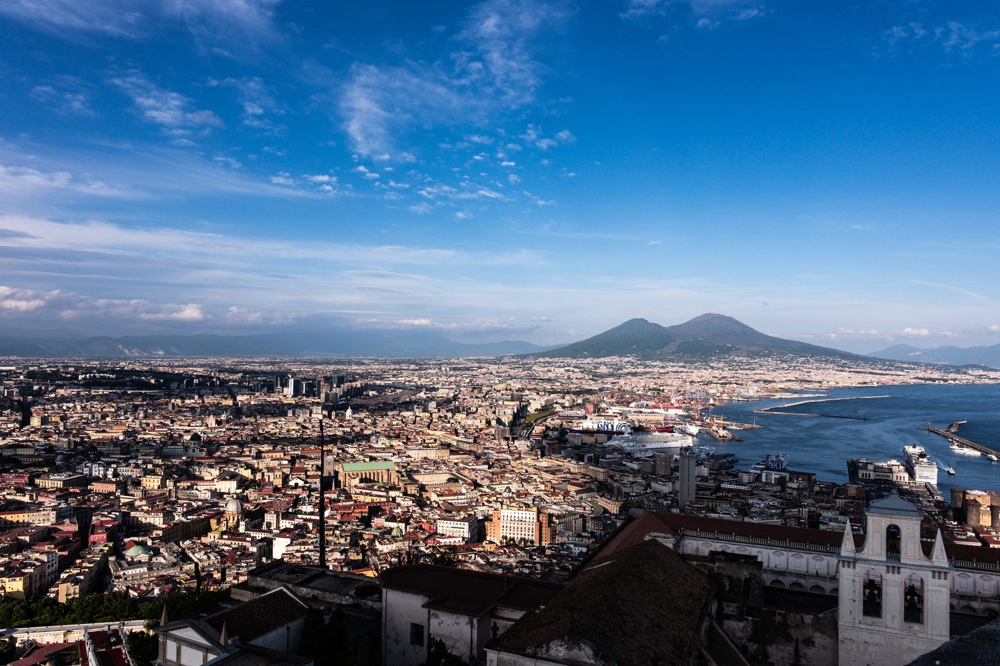

Pizza fritta, Caravaggio, Maradona — persönliche Tipps aus diversen Besuchen in dieser tollen Stadt. Vedi Napoli e poi muori.
Fried dough, Caravaggio, Maradona — personal tips from many visits to this wonderful city. Vedi Napoli e poi muori.
Stand: Mai 2025 • gut zu wissen ↓
Last updated: May 2025 • good to know ↓
Linie 1 (die wichtige: Toledo, Dante, Museo…), Linie 6 (Municipio ↔ Fuorigrotta über Chiaia/Mergellina, eröffnet 2024) und vier Funicolari — alles ANM. Linie 2 hat einen anderen Betreiber (Trenitalia) und eigene Tickets.
Update 2026: Die L6 fährt seit März Mo–Fr bis ca. 21 Uhr, am Wochenende weiterhin nur vormittags (bis ~15 Uhr).
Circumvesuviana usw. (Pompeji, Ercolano, Sorrent) werden von EAV betrieben und fahren zum Großteil rechts unterhalb des Hauptbahnhofs — unübersichtlich, ein paar Minuten Puffer einplanen.
| Einzelticket (ANM) | 1,50 € |
| Funicolare | 1,30 € |
| Tageskarte (gilt nicht für Linie 2!) | 4,50 € |
Line 1 (the useful one — Toledo, Dante, Museo…), Line 6 (Municipio ↔ Fuorigrotta via Chiaia/Mergellina, opened 2024) and four funiculars, all run by ANM. Line 2 is run by Trenitalia and needs its own tickets.
Since March 2026, Line 6 runs Mon–Fri until about 21:00; weekends mornings only (until ~15:00).
Circumvesuviana & co. (Pompeii, Herculaneum, Sorrento) are run by EAV and leave mostly from the lower level underneath Napoli Centrale — it's confusing, plan a few extra minutes.
| Single ticket (ANM) | €1.50 |
| Funicular | €1.30 |
| Day pass (not valid on Line 2!) | €4.50 |
Lohnt sich relativ schnell, auch wenn das System etwas unübersichtlich ist. Online/per App kaufen, man bekommt einen QR-Code. Bei den 3-Tages-Versionen ist der Nahverkehr dabei. Wer nach Pompeji will, nimmt eine Campania-Variante statt der reinen Napoli-Karte.
| Napoli 3 Tage (3 Sites + Transport) | 27 € |
| Campania 3 Tage (2 Sites + Transport) | 41 € |
| Campania 7 Tage (5 Sites, ohne Transport) | 43 € |
| 365 Lite (34 Sites, je 1×, ohne Transport) | 26 € |
campaniartecard.it ↗ (Preise Stand 2026)
Pays off quickly, even if the system is a bit confusing. Buy online / via app, you get a QR code. Urban transport is included in the 3-day versions. Going to Pompeii? Take a Campania version instead of the Naples-only one.
| Napoli 3 days (3 sites + transport) | €27 |
| Campania 3 days (2 sites + transport) | €41 |
| Campania 7 days (5 sites, no transport) | €43 |
| 365 Lite (34 sites, 1× each, no transport) | €26 |
campaniartecard.it ↗ (prices as of 2026)
Zwei Google-Maps-Listen, die man sich speichern sollte:
Two Google Maps lists worth saving: